Analiza rješenja · JOI Spring Camp 2021 · Dan 3
Drevni stroj
O ovom članku
Tekst je prijevod službene japanske prezentacije rješenja, preoblikovan u članak. Slajdovi su ugrađeni kao slike; natpis pod svakim slajdom je prijevod teksta na njemu. Dijelovi označeni kao trenerska napomena nisu u izvornoj prezentaciji — dodani su da popune korake koje slajdovi preskaču ili samo skiciraju.
Slajdovi
Zadatak
izvorni slajdovi 1–3
-
1Naslovni slajd: Ancient Machine; analiza: Todaka Sora. -
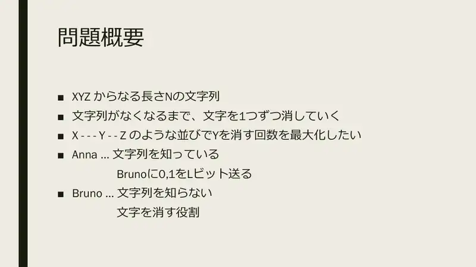
2Sažetak. Niz duljine $N$ nad XYZ; znakove brišemo jedan po jedan dok ne nestanu. Maksimiziraj broj brisanjaYu rasporedu oblikaX - - - Y - - Z. Anna zna niz i šalje Bruni $L$ bita; Bruno ne zna niz i briše. -
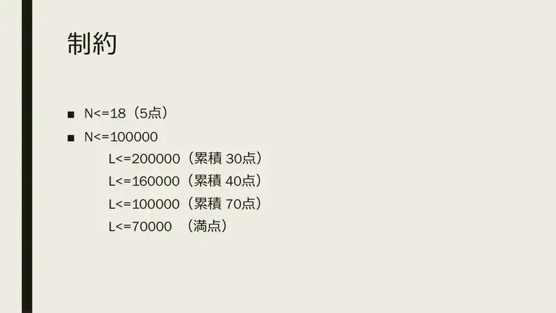
3Ograničenja: $N \le 18$ (5 b.); $N \le 100\,000$: $L \le 200\,000$ (30), $\le 160\,000$ (40), $\le 100\,000$ (70), $\le 70\,000$ (100).
← → tipke ili klik na sliku
Prve razine
Koraci algoritma
Pošalji sve
izvorni slajdovi 4–5
-
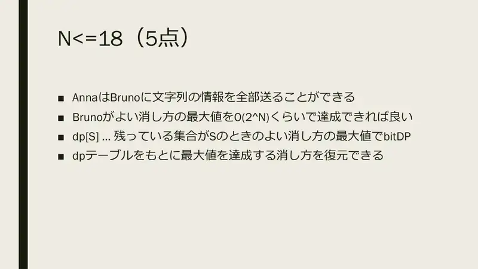
4$N \le 18$: Anna pošalje cijeli niz; Bruno bitmask DP $dp[S]$ = najveći broj dobrih brisanja kad je preostao skup $S$, $O(2^N\cdot N)$, s rekonstrukcijom. -
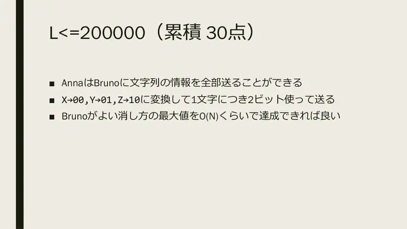
5$L \le 200\,000$: pošalji cijeli niz, X→00,Y→01,Z→10, 2 bita po znaku. Bruno mora postići maksimum u $O(N)$.
← → tipke ili klik na sliku
Koraci algoritma
Maksimum i kako ga postići
izvorni slajdovi 6–9
-
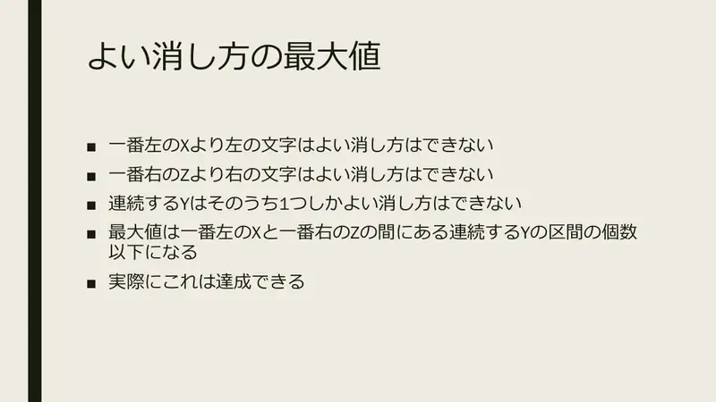
6Znakovi lijevo od najljevijeg Xi desno od najdesnijegZne mogu biti dobro izbrisani. Od uzastopnihYsamo jedan može. Maksimum $\le$ broj blokova uzastopnihYizmeđu prvogXi zadnjegZ— i to je dostižno. -
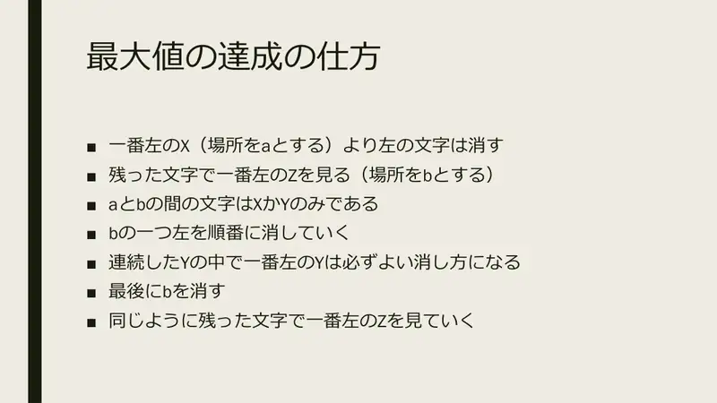
7Postizanje: izbriši sve lijevo od najljevijeg X(položaj $a$). Pogledaj najljeviji preostaliZ($b$); između $a$ i $b$ samo suX/Y. Briši redom počevši od $b-1$ ulijevo: najljevijiYsvakog bloka sigurno je dobar. Na kraju izbriši $b$ i ponovi sa sljedećim najljevijimZ. -
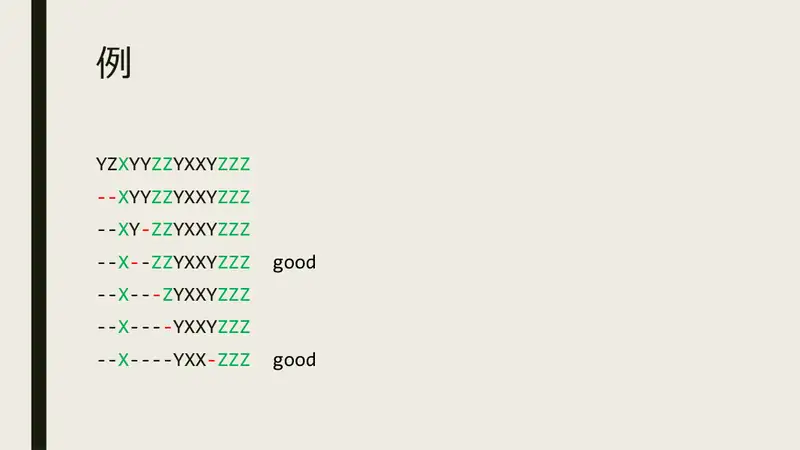
8Primjer YZXYYZZYXXYZZZ: briši ispredX, pa udesno-ulijevo do prvogZ:--X--ZZYXXYZZZ(dobro), …,--X----YXX-ZZZ(dobro). -
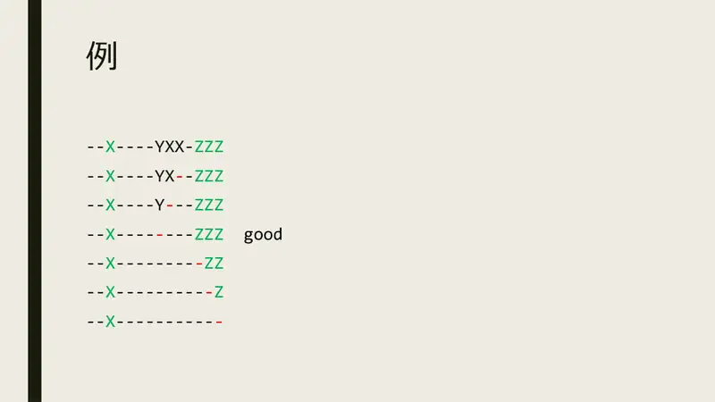
9Nastavak: --X----Y---ZZZ→--X--------ZZZ(dobro) → brišemo preostaleZ→--X-----------. Ukupno 3 dobra brisanja = 3 blokaY.
← → tipke ili klik na sliku
Koraci algoritma
160 000 i 100 000 bita
izvorni slajdovi 10–13
-
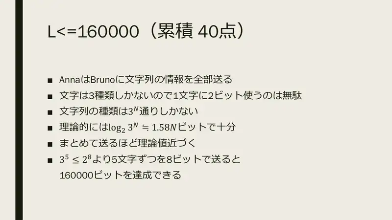
10$L \le 160\,000$: 2 bita po znaku je rasipno — nizova je $3^N$, teoretski $\log_2 3^N \approx 1.58N$. Što više znakova zajedno, to bliže: $3^5 \le 2^8$, pa 5 znakova u 8 bita daje $160\,000$. -
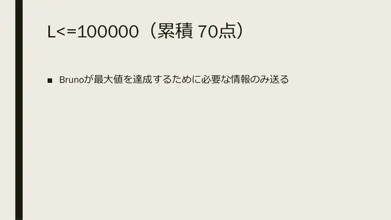
11$L \le 100\,000$: šalji samo informaciju koju Bruno treba za maksimum. -

12Bruno od najljevijeg Xnadalje za svakiZslijeva briše njegove lijeve susjede. Treba mu: položaj prvogXi položajiZ-ova iza njega — 1 bit po znaku: 1 za prviXi teZ-ove, inače 0. -
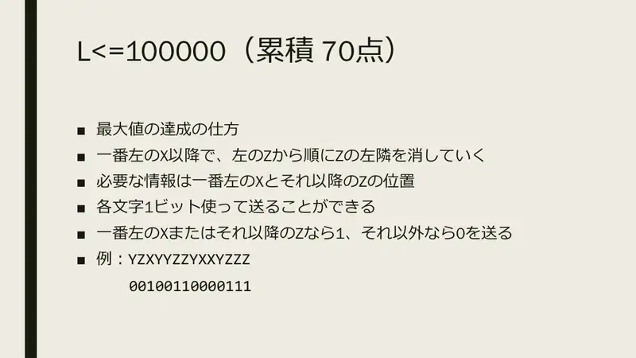
13Primjer: YZXYYZZYXXYZZZ→00100110000111.
← → tipke ili klik na sliku
Puni bodovi L ≤ 70 000
Koraci algoritma
Fibonaccijevo kodiranje
izvorni slajdovi 14–19
-
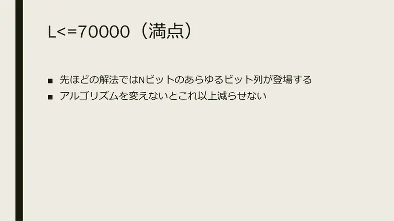
14U prethodnom rješenju pojavljuju se svi $N$-bitni nizovi — bez promjene algoritma dalje se ne može. -
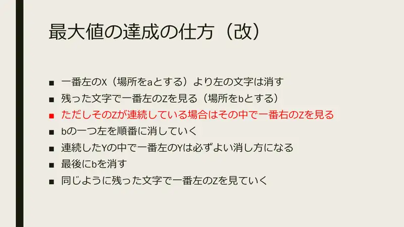
15Izmjena: gledaj najljeviji preostali Z, ali ako je on u nizu uzastopnihZ, uzmi najdesnijiZtog niza kao $b$. Briši od $b-1$ ulijevo do $a+1$; najljevijiYsvakog bloka je dobar; izbriši $b$; ponovi. -
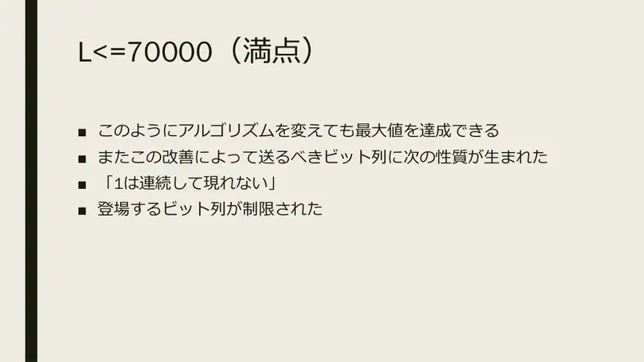
16I ovako se postiže maksimum, a bitovni niz koji se šalje dobiva svojstvo: jedinice se ne pojavljuju uzastopno. Skup mogućih poruka je ograničen. -
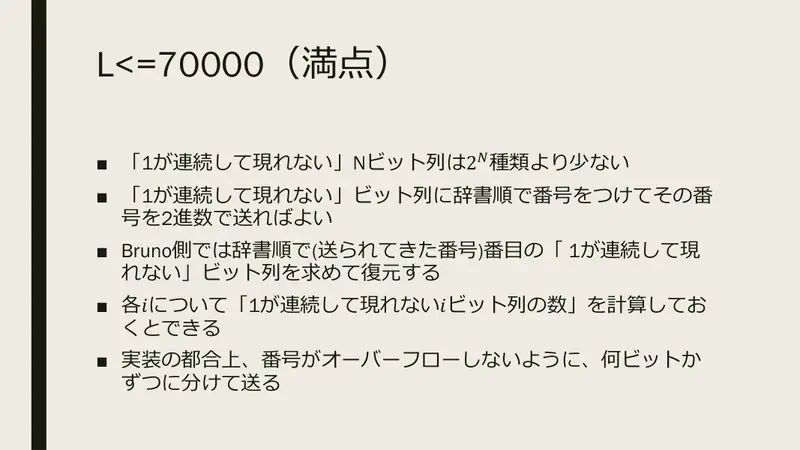
17Takvih $N$-bitnih nizova manje je od $2^N$. Numeriraj ih leksikografski i pošalji redni broj binarno; Bruno rekonstruira niz iz rednog broja. Treba tablica „broj valjanih nizova duljine $i$”. Zbog prelijevanja šalji u blokovima po nekoliko bita. -
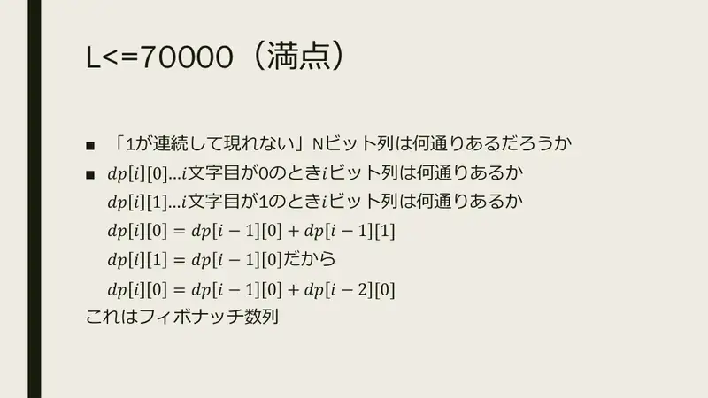
18Koliko ih ima? $dp_i[0]$ = broj nizova duljine $i$ koji završavaju 0, $dp_i[1]$ — s 1. $dp_i[0] = dp_{i-1}[0] + dp_{i-1}[1]$, $dp_i[1] = dp_{i-1}[0]$, pa $dp_i[0] = dp_{i-1}[0] + dp_{i-2}[0]$ — Fibonacci. -
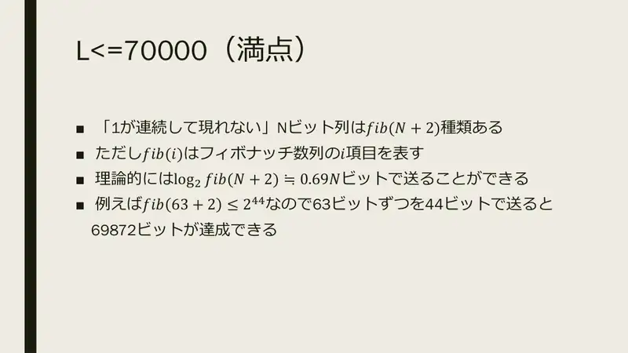
19Ukupno $F_{N+2}$ nizova; teoretski $\log_2 F_{N+2} \approx 0.69N$ bita. Npr. $F_{63+2} \le 2^{44}$: blokovi od 63 bita u 44 bita → $69\,872$ bita.
← → tipke ili klik na sliku
Koraci algoritma
Drugo rješenje
izvorni slajdovi 20–21
-
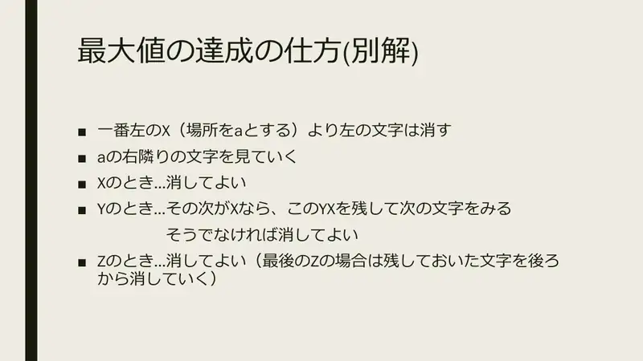
20Izbriši sve lijevo od najljevijeg X($a$), pa gledaj znakove desno od $a$ redom:X→ izbriši;Y→ ako je sljedećiX, zadrži parYXi preskoči ga, inače izbriši;Z→ izbriši (zadnjiZzadrži, pa zadržano brisi straga prema naprijed). -
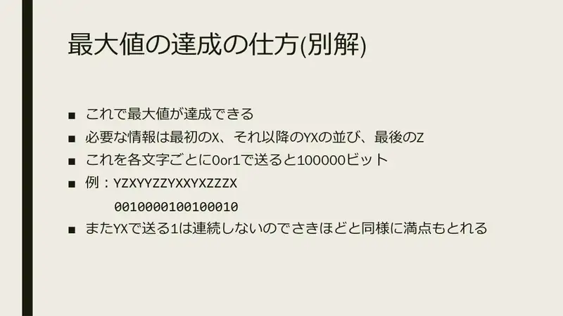
21I to daje maksimum. Potrebno: prvi X, paroviYXiza njega, zadnjiZ; 1 bit po znaku = $100\,000$. Primjer:YZXYYZZYXXYXZZZX→0010000100100010. Jedinice naYizYXnisu uzastopne, pa isto kodiranje daje puni broj bodova.
← → tipke ili klik na sliku
Slajd
Raspodjela bodova
izvorni slajd 22
-
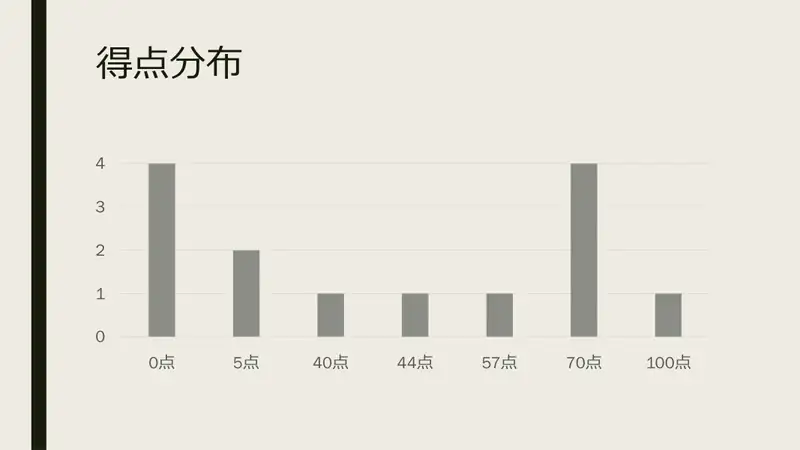
22Raspodjela: 0, 5, 40, 44, 57, 70, 100 bodova.
Sažetak
- Maksimum = broj
Y-blokova između prvogXi zadnjegZ; postiže se brisanjem s desna na lijevo do svakogZ. - Bruni trebaju samo graničnici (1 bit po znaku); označavanjem samo zadnjeg
Zu nizu jedinice nisu susjedne. - Nizovi bez „11” = Fibonacci: 63 bita → 44 bita, ukupno ≈ 0.7N.